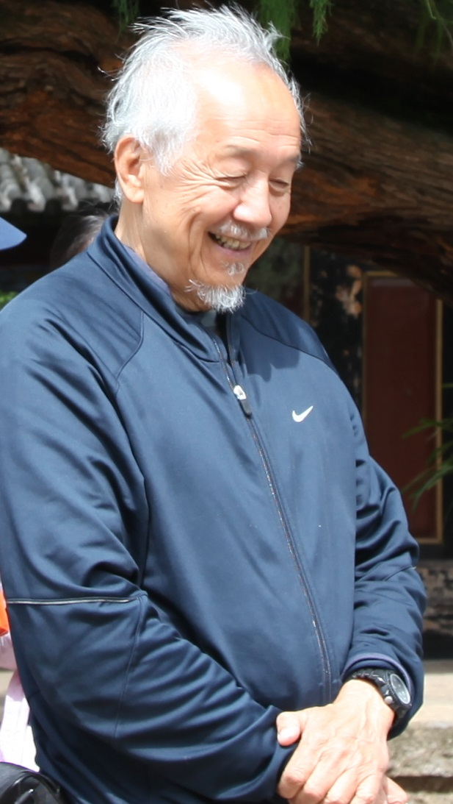
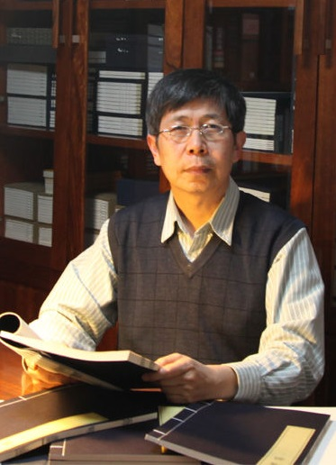

Professor William S.-Y. Wang
Professor Wang was born in Shanghai in 1933. In 1955 he graduated from Columbia College in New York City, and received his Ph.D. in linguistics at the University of Michigan in 1960.
Prof. Wang did research on machine translation from Russian to English at the I.B.M. Research Center at Yorktown Heights. He also held a post-doctoral appointment at the Research Laboratory of Electronics of the Massachusetts Institute of Technology, working on problems of speech analysis. He returned to teach at the University of Michigan for a year before accepting a position at Ohio State University. There he helped establish a Department of Linguistics and a Department of East Asian Languages, and served as the first Chairman of both. Prof. Wang was appointed Professor of Linguistics at the University of California in Berkeley in 1966, where he founded the Phonology Laboratory. In 1973, he founded the Journal of Chinese Linguistics, the first international publication in the field, and continues to serve as its editor.
In 1996 Prof. Wang was appointed Chair Professor of Language Engineering at the City University of Hong Kong. In 2004 he moved to the Chinese University of Hong Kong, where he is now Adjunct Professor in the Department of Electronic Engineering, and Honorary Professor of the Faculty of Arts. He is also Honorary Professor of Peking University, and Adjunct Professor of Hong Kong University of Science and Technology. In 2015, he was appointed Chair Professor of Language and Cognitive Sciences at the Polytechnic University of Hong Kong.
In 1992, he was elected inaugural President of the International Association of Chinese Linguistics when it was founded in 1992; also in 1992, he was elected Academician of Academia Sinica. He has been awarded fellowships from the Fulbright Commission, the Guggenheim Foundation, and from the Center for Advanced Studies at Bellagio (Italy), at Kyoto (Japan), and twice at Stanford (USA).
Prof. Wang works in the multidisciplinary area of the evolution of language and related cognitive abilities. The issues in this area include: the acquisition of native language and foreign language, multilingualism, language evolution at various time scales, the impairment of language due to ageing or disease, and the use of machines to communicate in language.
Professor Daniel Everett
Dan Everett was born in Southern California in 1951. He completed an undergraduate degree in biblical studies from the Moody Bible Institute in Chicago and his Master’s and ScD in linguistics at the Universidade Estadual de Campinas in Brazil. From 1977 until 2009, he regularly conducted research on the Pirahã language of Brazil, among other Amazonian languages. He has also conducted research on Tzeltal (Mexico), Selish (USA), Arawan (Brazil), Satere (Brazil), Wari’ (Brazil) among others. He has published fourteen books and more than 110 articles and has lectured around the world on his research. He converted to Christianity at 17 years of age and was a committed, evangelical Christian until abandoning his faith (for reasons given in Don’t sleep, there are snakes) in his early 50s. He has recently published books on culture and language evolution. Everett resides in Petersham, MA, surrounded by woods, along with his wife, Linda, and his two dogs. His three children (mentioned in the book) have now given him seven grandchildren.
Professor Salikoko Mufwene

Salikoko S. Mufwene is the Frank J. McLoraine Distinguished Service Professor of Linguistics and the College at the University of Chicago, where he also serves as Professor on the Committee on Evolutionary Biology and on the Committee on the Conceptual and Historical Studies of Science. His current research is in evolutionary linguistics, which he approaches from an ecological perspective, focused on the phylogenetic emergence of language and on how languages have been affected by colonization and world-wide globalization, especially regarding the indigenization of European languages in the colonies and language birth and death. Mufwene has authored three books: The Ecology of Language Evolution (CUP, 2001), Créoles, écologie sociale, évolution linguistique (l’Harmattan, 2005), and Language Evolution: Contact, competition and change (Continuum Press, 2008). He has (co-)edited several other books and authored close to 250 articles, book chapters, and reviews on the above topics and others. He is the founding editor of Cambridge Approaches to Language Contact. His distinctions include lectures at the Collège de France (Fall 2003) and teaching at Harvard University (spring 2002) and three times at the Summer Institute of the Linguistic Society of America (1999, 2005, 2015). He was also a fellow at the Institute for Advanced Study in Lyon (2010-2011). http://mufwene.uchicago.edu/
Professor Kong Jiangping
Kong Jiangping got his B.A. at the department of foreign language and literature, Zhenzhou University in 1981, and MA. at the department of ethnology and anthropology, the graduate school of Chinese Academy of Social Sciences in 1988. He obtained his Ph.D. at the department of electronic engineering, City University of Hong Kong in 2001. He joined the institute of ethnology and anthropology, Chinese Academy of Social Sciences as an associate and full professor during 1988 to 2003, and the department of Chinese language and literature, Peking University as a full professor of phonetics and linguistics and the director of linguistic lab from 2003 to present. He once worked as a visiting professor and the executive director of Hong Kong Putonghua Education and Assessment Centre at the Faculty of Education, Hong Kong University during 2009 to 2010. He is interested in phonation types of languages in China, tone genetic study in Tibetan, acoustical and physiological study on speech modality of Mandarin, phonetic study on traditional oral cultures in China and the speech evolution of human beings.
Professor Jared Taglialatela
My primary area of interest is in great ape vocal and gestural communication and the neurobiological foundations of these behaviors. In addition to work on the communicative behavior of great apes, I have published a number of studies on the neural correlates of both vocal and gestural communication in chimpanzees using both neuroanatomical and neurofunctional imaging techniques. Specifically, I have published studies examining the neurofunctional correlates of communicative pointing and vocalizations in conjunction with alternation of gaze by captive chimpanzees.
In my laboratory at Kennesaw State University, I have, and continue to mentor both undergraduate and masters level graduate students who are active collaborators in my work. Previous students in my laboratory have not only contributed meaningfully to the work, but have presented these findings at regional and national meetings, and co-authored peer-reviewed journal articles.
I am also the Director of Research at the Ape Cognition and Conservation Initiative in Des Moines Iowa. This facility houses bonobos, including the world famous Kanzi, and is aimed at understanding the evolutionary origins of human language, cognition and behavior.
Professor Yicheng Wu

Yicheng Wu is currently Professor of Linguistics at the Center for the Study of Language and Cognition of Zhejiang University, Hangzhou, China. He was born in Zhoukou in 1966. He received his MA in Linguistics from Shanghai University of Science and Technology in 1993, and his PhD in Linguistics from the University of Edinburgh in 2005. Then, he held a post-doctoral fellowship from 2006-2008 in the Department of Linguistics at the University of Hong Kong. He is a member of the editorial board of several bilingual dictionaries such as Collins Mandarin-English and English-Mandarin Dictionary and Oxford Chinese Dictionary, and a co-editor of a special issue of Linguistics. He is interested in syntax, semantics, pragmatics, and language evolution, and takes an interactive stance on the generation, interpretation and evolution of language. Publications: Classifiers ≠ Determiners; Special issue: Numeral classifiers in East Asia; Copular constructions: Semantic Interpretation and pragmatic enrichment; Which way to move: The evolution of motion expressions.
Professor Jackson Gandour
Jackson Gandour developed an interest in tone languages during his service as a Peace Corps Volunteer in Thailand (1964-66). After receiving his MA in linguistics from the University of Pittsburgh (1968), he taught linguistics as a Visiting Fulbright Lecturer at Niigata University in Japan (1968-69). He later returned to Thailand (1975) to carry out multidimensional scaling research on tone perception for his PhD in linguistics at UCLA (1976), and continued this research as a postdoctoral fellow at Bell Labs (1976-77). As a faculty member at Purdue University (1977-present), his research interests focused initially on the perception of tone in adult speakers of tone languages with communication disorders. He carried out field research in Thailand on tone production and perception in aphasic, alaryngeal, and hearing-impaired populations as a Senior Fulbright Research Scholar at Mahidol University (1988-89); functional neuroimaging (PET, fMRI) studies of speech prosody in healthy adult speakers of Mandarin and Thai (1997-2003) at the Indiana University School of Medicine; and more recently, auditory electrophysiological (MMN, FFR, CPR) studies of brainstem and cortical pitch encoding in tone languages at Purdue University (2004-present). He has served on the editorial boards of Brain and Language (1993-2011) and Aphasiology (2002-2011).